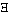

HOME TOP UP PREV NEXT 1 2 3 4 5 6 GERMAN MAP Tractatus Logico-Philosophicus 5.47
For all logical operations are already contained in the elementary proposition. For "fa" says the same as "(x) . fx . x=a".
Where there is composition, there is argument and function, and where these are, all logical constants already are.
One could say: the one logical constant is that which all propositions, according to their nature, have in common with one another.
That however is the general form of proposition.
A possible sign must also be able to signify. Everything which is possible in logic is also permitted. ("Socrates is identical" means nothing because there is no property which is called "identical". The proposition is senseless beause we have not made some arbitrary determination, not because the symbol is in itself unpermissible.)
In a certain sense we cannot make mistakes in logic.